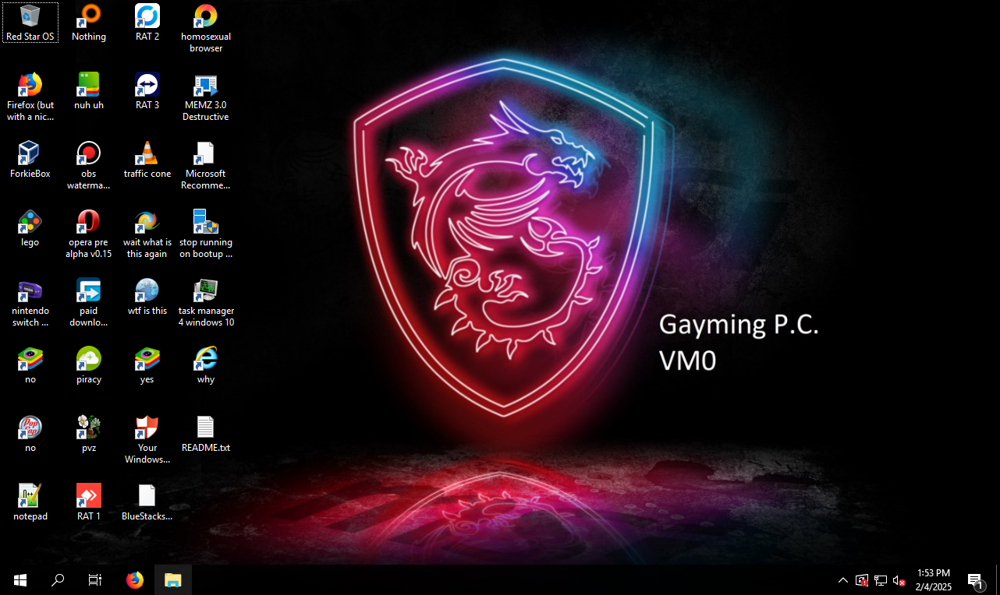

----------
OS: Windows Server 2019
----------
Rustdesk:
ID: 163 870 232
Password: LJ-Vm0-Rustdesk
----------
AnyDesk:
ID: 1 497 712 836
Password: LJ-Vm0-Anydesk
----------
TeamViewer: ID: 541 067 744 Password: LJ-Vm0-Teamviewer----------
Usual Operational Hours: 5:00pm-8:00pm EST
----------
Notes:
FYI: This is an ANARCHY VM, meaning this VM has no antiforkie, and very limited rules.
WARNING: Using RustDesk Web to connect is highly unrecommended. When multiple "web" accounts are connected, I can only talk to the FIRST one. For web accounts, its first come first serve.
If needed, the user password is 1
This is my horrible attempt at a "gaming pc." The reason I picked Server 2019 is because MS Copilot said so. Bruh.
Anyways this VM includes programs such as Bluestacks, Winaero, and 4k video downloader among other things. It is also our first TeamViewer-supported VM.
----------
VM last updated 2-4-2025